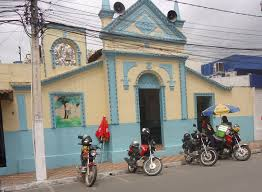
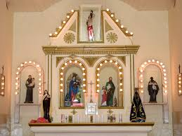
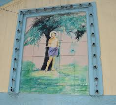

A Igreja de São Sebastião foi construída como ação de graças, após uma epidemia de cólera que assolou o povo agrestino, nos idos dos anos de 1904 e 1905, por iniciativa do comerciante José Zeferino de Magalhães. É, portanto, mais antiga que a própria cidade. Atualmente, a igreja é considerada Patrimônio Histórico e Cultural de Arapiraca. Um dos cidadãos que mais fizeram pela fé da região, o monsenhor Epitácio Rodrigues, que foi pároco do município, descansa seus restos mortais no interior do local. Todos os anos, no final do mês de novembro, é comemorado o Tríduo de São Sebastião, com procissão, missas, apresentação de bandas de pífano e quermesse.
  